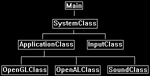

This tutorial will cover the basics of using Open Audio Language (OpenAL) as well as how to load and play .wav audio files.
This tutorial is based on the code from the previous OpenGL 4.0 tutorials.
I will cover a couple basics about OpenAL as well as a bit about sound formats before we start the code part of the tutorial.
OpenAL was written to follow the same programming paradigms that OpenGL uses.
So you will find using it very similar to using OpenGL.
Also, OpenAL is very easy to use.
There is first some basic setup, and after that you can create buffers and copy your audio data into them and then play that audio.
It is that simple.
The nice thing about OpenAL is that you can play any audio format you want.
In this tutorial I cover the .wav audio format but you can replace the .wav code with .mp3 or anything you prefer.
You can even use your own audio format if you have created one.
To install OpenAL on Linux you just need to download the development package.
On Ubuntu you can simply use this command to install it from the command line:
$ sudo apt-get install libopenal-dev
You will also need to add a linking option to Code::Blocks or your makefile to link the OpenAL libraries:
-l openal
Framework
To start the tutorial, we will first look at the simplified framework.
The new classes are the OpenALClass and the SoundClass.
These contain all the OpenAL and .wav format functionality.
I have removed the other classes since they aren't needed for this tutorial.

Openalclass.h
The OpenALClass encapsulates the basic OpenAL setup functionality.
////////////////////////////////////////////////////////////////////////////////
// Filename: openalclass.h
////////////////////////////////////////////////////////////////////////////////
#ifndef _OPENALCLASS_H_
#define _OPENALCLASS_H_
The following headers are required for OpenAL to compile properly.
//////////////
// INCLUDES //
//////////////
#include <AL/al.h>
#include <AL/alc.h>
#include <iostream>
using namespace std;
////////////////////////////////////////////////////////////////////////////////
// Class name: OpenALClass
////////////////////////////////////////////////////////////////////////////////
class OpenALClass
{
public:
OpenALClass();
OpenALClass(const OpenALClass&);
~OpenALClass();
bool Initialize();
void Shutdown();
private:
};
#endif
Openalclass.cpp
////////////////////////////////////////////////////////////////////////////////
// Filename: openalclass.cpp
////////////////////////////////////////////////////////////////////////////////
#include "openalclass.h"
OpenALClass::OpenALClass()
{
}
OpenALClass::OpenALClass(const OpenALClass& other)
{
}
OpenALClass::~OpenALClass()
{
}
bool OpenALClass::Initialize()
{
ALCdevice* device;
ALCcontext* context;
float position[3];
bool result;
One way to initialize OpenAL is just to get the default audio device on the system our program is running on.
Once we have the device we can create a context on that device and set it to the current context for audio rendering.
This will now allow us to use the system's audio device via OpenAL.
// Select the default audio device on the system.
device = alcOpenDevice(NULL);
if(!device)
{
return false;
}
// Create a context on the device.
context = alcCreateContext(device, NULL);
// Open the context by setting it as the current context on the device.
alcMakeContextCurrent(context);
In the next tutorial we will cover 3D sound.
And to support 3D sound we will need to setup a listener interface to represent where in the 3D world the person will be listening from.
// Set the initial position of the listener.
position[0] = 0.0f;
position[1] = 0.0f;
position[2] = 0.0f;
// Clear any previous unaddressed error codes.
alGetError();
// Set the listener position.
alListenerfv(AL_POSITION, position);
if(alGetError() != AL_NO_ERROR)
{
return false;
}
return true;
}
void OpenALClass::Shutdown()
{
ALCdevice* device;
ALCcontext* context;
To shut down OpenAL we retrieve our device and context first.
We then set the current context to NULL and then we can release our context and device after that.
// Retrieve the current context and device.
context = alcGetCurrentContext();
device = alcGetContextsDevice(context);
// Unset our audio context as the current one.
alcMakeContextCurrent(NULL);
// Destroy our audio context.
alcDestroyContext(context);
// Close our audio device.
alcCloseDevice(device);
return;
}
Soundclass.h
The SoundClass encapsulates the .wav audio loading and playing capabilities.
////////////////////////////////////////////////////////////////////////////////
// Filename: soundclass.h
////////////////////////////////////////////////////////////////////////////////
#ifndef _SOUNDCLASS_H_
#define _SOUNDCLASS_H_
///////////////////////
// MY CLASS INCLUDES //
///////////////////////
#include "openalclass.h"
////////////////////////////////////////////////////////////////////////////////
// Class name: SoundClass
////////////////////////////////////////////////////////////////////////////////
class SoundClass
{
private:
The structs used here are for the .wav file format.
If you are using a different format you will want to replace these structs with the ones required for your audio format.
struct RiffWaveHeaderType
{
char chunkId[4];
unsigned int chunkSize;
char format[4];
};
struct SubChunkHeaderType
{
char subChunkId[4];
unsigned int subChunkSize;
};
struct FmtType
{
unsigned short audioFormat;
unsigned short numChannels;
unsigned int sampleRate;
unsigned int bytesPerSecond;
unsigned short blockAlign;
unsigned short bitsPerSample;
};
public:
SoundClass();
SoundClass(const SoundClass&);
~SoundClass();
The LoadTrack function will load in the .wav audio file.
ReleaseTrack will release the .wav file.
PlayTrack and StopTrack will be used for starting and stopping the .wav file playing.
bool LoadTrack(char*, float);
void ReleaseTrack();
bool PlayTrack(bool);
bool StopTrack();
private:
LoadStereoWaveFile is used for specifically loading the .wav format.
If you have other formats you want to support you just add additional load functions for them here.
bool LoadStereoWaveFile(char*);
void ReleaseWaveFile();
private:
unsigned int m_audioBufferId, m_audioSourceId;
unsigned char* m_waveData;
unsigned int m_waveSize;
};
#endif
Soundclass.cpp
////////////////////////////////////////////////////////////////////////////////
// Filename: soundclass.cpp
////////////////////////////////////////////////////////////////////////////////
#include "soundclass.h"
SoundClass::SoundClass()
{
m_waveData = 0;
}
SoundClass::SoundClass(const SoundClass& other)
{
}
SoundClass::~SoundClass()
{
}
The LoadTrack function will load in our .wav file to an OpenAL sound buffer so that it can be played.
bool SoundClass::LoadTrack(char* filename, float volume)
{
bool result;
Before doing any OpenAL function calls we always need to reset the error state.
// Initialize the error state through a reset.
alGetError();
We start by first having OpenAL create a sound buffer using the alGenBuffers function.
This function will then return the ID of that buffer so we can reference it through any other future function calls.
You will notice this works the same way as OpenGL for creating buffers and getting IDs back.
// Generate an audio buffer.
alGenBuffers(1, &m_audioBufferId);
if(alGetError() != AL_NO_ERROR)
{
return false;
}
Next we call our own custom LoadStereoWaveFile function which will load our .wav file data into the m_waveData array.
OpenAL does have its own .wav loading function, however, I want to show you how to load the .wav format yourself.
The reason being is this way you can then understand how to add any audio format yourself, even if OpenAL doesn't have a function to load it for you.
OpenAL will play or stream any audio format provided you present the data in the format OpenAL is looking for.
// Load the wave file for the sound.
result = LoadStereoWaveFile(filename);
if(!result)
{
return false;
}
Now that the .wav file data is copied into the m_waveData array we can use that to load our OpenAL audio buffer using the alBufferData function.
We need to provide the function our buffer ID that we got back when we called alGenBuffers so it knows which buffer to copy the data into.
We also provide the function the format we want (16-bit stereo), the .wav data in the m_waveData array, the size of the array data, and the frequency that data was recorded at.
// Copy the wav data into the audio buffer.
alBufferData(m_audioBufferId, AL_FORMAT_STEREO16, m_waveData, m_waveSize, 44100);
if(alGetError() != AL_NO_ERROR)
{
return false;
}
Once the audio data has been copied into the OpenAL sound buffer we can release the m_waveData array.
// Release the wave data since it was copied into the OpenAL buffer.
ReleaseWaveFile();
Now the buffer can't be used just yet.
We must first create a source which will act as the interface to the audio buffer.
From that point forward to do anything such as change the volume, play the buffer, query it for its position, we will need to use the source.
And just like when we created the buffer, we will get an ID back so that we can call the correct source whenever we want to use this sound buffer.
// Generate an audio source.
alGenSources(1, &m_audioSourceId);
if(alGetError() != AL_NO_ERROR)
{
return false;
}
// Attach the buffer to the source.
alSourcei(m_audioSourceId, AL_BUFFER, m_audioBufferId);
if(alGetError() != AL_NO_ERROR)
{
return false;
}
// Set the volume to max.
alSourcef(m_audioSourceId, AL_GAIN, 1.0f);
if(alGetError() != AL_NO_ERROR)
{
return false;
}
return true;
}
void SoundClass::ReleaseTrack()
{
To release the audio buffer we call the delete functions for both the OpenAL audio source and the OpenAL audio buffer using the IDs we obtained when we initially created them.
// Release the audio source.
alDeleteSources(1, &m_audioSourceId);
// Release the audio buffer.
alDeleteBuffers(1, &m_audioBufferId);
return;
}
The PlayWaveFile function will play the audio file stored in the OpenAL buffer through the source.
The moment you use the alSourcePlay function it will automatically mix the audio into the current audio stream and start playing it.
I have also add the option to play it looping or single play.
bool SoundClass::PlayTrack(bool looping)
{
// Initialize the error state through a reset.
alGetError();
if(looping == true)
{
// Set it to looping.
alSourcei(m_audioSourceId, AL_LOOPING, AL_TRUE);
if(alGetError() != AL_NO_ERROR)
{
return false;
}
}
else
{
// Set it to not looping.
alSourcei(m_audioSourceId, AL_LOOPING, AL_FALSE);
if(alGetError() != AL_NO_ERROR)
{
return false;
}
}
// If looping is on then play the contents of the sound buffer in a loop, otherwise just play it once.
alSourcePlay(m_audioSourceId);
if(alGetError() != AL_NO_ERROR)
{
return false;
}
return true;
}
The StopTrack function will stop the source from playing the sound.
bool SoundClass::StopTrack()
{
// Initialize the error state through a reset.
alGetError();
// Stop the sound from playing.
alSourceStop(m_audioSourceId);
if(alGetError() != AL_NO_ERROR)
{
return false;
}
return true;
}
The LoadWaveFile function is what handles loading in a .wav audio file and then copies the data onto a new secondary buffer.
If you are looking to do different formats you would replace this function or write a similar one.
bool SoundClass::LoadStereoWaveFile(char* filename)
{
FILE* filePtr;
RiffWaveHeaderType riffWaveFileHeader;
SubChunkHeaderType subChunkHeader;
FmtType fmtData;
unsigned int count, seekSize;
bool foundFormat, foundData;
To start first open the .wav file and read in the header of the file.
The header will contain all the information about the audio file so we can use that to create a buffer to accommodate the audio data.
The audio file header also tells us where the data begins and how big it is.
You will notice I check for all the needed tags to ensure the audio file is not corrupt and is the proper wave file format containing RIFF and WAVE tags.
I also do a couple other checks to ensure it is a 44.1KHz stereo 16-bit audio file.
If it is mono, 22.1 KHZ, 8-bit, or anything else then it will fail ensuring we are only loading the exact format we want.
// Open the wave file for reading in binary.
filePtr = fopen(filename, "rb");
if(filePtr == NULL)
{
return false;
}
// Read in the riff wave file header.
count = fread(&riffWaveFileHeader, sizeof(riffWaveFileHeader), 1, filePtr);
if(count != 1)
{
return false;
}
// Check that the chunk ID is the RIFF format.
if((riffWaveFileHeader.chunkId[0] != 'R') || (riffWaveFileHeader.chunkId[1] != 'I') || (riffWaveFileHeader.chunkId[2] != 'F') || (riffWaveFileHeader.chunkId[3] != 'F'))
{
return false;
}
// Check that the file format is the WAVE format.
if((riffWaveFileHeader.format[0] != 'W') || (riffWaveFileHeader.format[1] != 'A') || (riffWaveFileHeader.format[2] != 'V') || (riffWaveFileHeader.format[3] != 'E'))
{
return false;
}
Now .wav files are made up of sub chunks, and the first sub chunk we need to find in the file is the fmt sub chunk.
So, we parse through the file until it is found.
// Read in the sub chunk headers until you find the format chunk.
foundFormat = false;
while(foundFormat == false)
{
// Read in the sub chunk header.
count = fread(&subChunkHeader, sizeof(subChunkHeader), 1, filePtr);
if(count != 1)
{
return false;
}
// Determine if it is the fmt header. If not then move to the end of the chunk and read in the next one.
if((subChunkHeader.subChunkId[0] == 'f') && (subChunkHeader.subChunkId[1] == 'm') && (subChunkHeader.subChunkId[2] == 't') && (subChunkHeader.subChunkId[3] == ' '))
{
foundFormat = true;
}
else
{
fseek(filePtr, subChunkHeader.subChunkSize, SEEK_CUR);
}
}
Once we have found the fmt sub chunk we can now verify that the format of the file is correct.
// Read in the format data.
count = fread(&fmtData, sizeof(fmtData), 1, filePtr);
if(count != 1)
{
return false;
}
// Check that the audio format is WAVE_FORMAT_PCM (1).
if(fmtData.audioFormat != 1)
{
return false;
}
// Check that the wave file was recorded in stereo format.
if(fmtData.numChannels != 2)
{
return false;
}
// Check that the wave file was recorded at a sample rate of 44.1 KHz.
if(fmtData.sampleRate != 44100)
{
return false;
}
// Ensure that the wave file was recorded in 16 bit format.
if(fmtData.bitsPerSample != 16)
{
return false;
}
Now that we are done with the fmt sub chunk we need to find the actual data sub chunk.
// Seek up to the next sub chunk.
seekSize = subChunkHeader.subChunkSize - 16;
fseek(filePtr, seekSize, SEEK_CUR);
// Read in the sub chunk headers until you find the data chunk.
foundData = false;
while(foundData == false)
{
// Read in the sub chunk header.
count = fread(&subChunkHeader, sizeof(subChunkHeader), 1, filePtr);
if(count != 1)
{
return false;
}
// Determine if it is the data header. If not then move to the end of the chunk and read in the next one.
if((subChunkHeader.subChunkId[0] == 'd') && (subChunkHeader.subChunkId[1] == 'a') && (subChunkHeader.subChunkId[2] == 't') && (subChunkHeader.subChunkId[3] == 'a'))
{
foundData = true;
}
else
{
fseek(filePtr, subChunkHeader.subChunkSize, SEEK_CUR);
}
}
// Store the size of the data chunk.
m_waveSize = subChunkHeader.subChunkSize;
Now we can load in the wave data from the audio file into our array.
We will later use the array to populate our OpenAL sound buffer.
// Create a temporary buffer to hold the wave file data.
m_waveData = new unsigned char[m_waveSize];
// Read in the wave file data into the newly created buffer.
count = fread(m_waveData, 1, m_waveSize, filePtr);
if(count != m_waveSize)
{
return false;
}
// Close the file once done reading.
fclose(filePtr);
return true;
}
ReleaseWaveFile just does a release of the wave data array.
void SoundClass::ReleaseWaveFile()
{
// Release the wave data.
if(m_waveData)
{
delete [] m_waveData;
m_waveData = 0;
}
return;
}
Applicationclass.h
////////////////////////////////////////////////////////////////////////////////
// Filename: applicationclass.h
////////////////////////////////////////////////////////////////////////////////
#ifndef _APPLICATIONCLASS_H_
#define _APPLICATIONCLASS_H_
/////////////
// GLOBALS //
/////////////
const bool FULL_SCREEN = false;
const bool VSYNC_ENABLED = true;
const float SCREEN_NEAR = 0.3f;
const float SCREEN_DEPTH = 1000.0f;
///////////////////////
// MY CLASS INCLUDES //
///////////////////////
#include "inputclass.h"
#include "openglclass.h"
Include the two new sound header files.
#include "openalclass.h"
#include "soundclass.h"
////////////////////////////////////////////////////////////////////////////////
// Class Name: ApplicationClass
////////////////////////////////////////////////////////////////////////////////
class ApplicationClass
{
public:
ApplicationClass();
ApplicationClass(const ApplicationClass&);
~ApplicationClass();
bool Initialize(Display*, Window, int, int);
void Shutdown();
bool Frame(InputClass*);
private:
bool Render();
private:
OpenGLClass* m_OpenGL;
Define the OpenAL object and the test sound object.
OpenALClass* m_OpenAL;
SoundClass* m_TestSound1;
};
#endif
Applicationclass.cpp
////////////////////////////////////////////////////////////////////////////////
// Filename: applicationclass.cpp
////////////////////////////////////////////////////////////////////////////////
#include "applicationclass.h"
ApplicationClass::ApplicationClass()
{
m_OpenGL = 0;
m_OpenAL = 0;
m_TestSound1 = 0;
}
ApplicationClass::ApplicationClass(const ApplicationClass& other)
{
}
ApplicationClass::~ApplicationClass()
{
}
bool ApplicationClass::Initialize(Display* display, Window win, int screenWidth, int screenHeight)
{
char filename[256];
bool result;
// Create and initialize the OpenGL object.
m_OpenGL = new OpenGLClass;
result = m_OpenGL->Initialize(display, win, screenWidth, screenHeight, SCREEN_NEAR, SCREEN_DEPTH, VSYNC_ENABLED);
if(!result)
{
cout << "Error: Could not initialize the OpenGL object." << endl;
return false;
}
First create and load the OpenAL class object.
// Create and initialize the OpenAL object.
m_OpenAL = new OpenALClass;
result = m_OpenAL->Initialize();
if(!result)
{
cout << "Error: Could not initialize the OpenAL object." << endl;
return false;
}
Next load in the sound01.wav file into the m_TestSound SoundClass object.
// Set the filename for the sound to load.
strcpy(filename, "../Engine/data/sound01.wav");
// Create and initialize the sound object.
m_TestSound1 = new SoundClass;
result = m_TestSound1->LoadTrack(filename, 1.0f);
if(!result)
{
cout << "Error: Could not initialize the test sound 1 object." << endl;
return false;
}
Now that it is loaded, we can start playing the sound.
I will set looping to true for this tutorial.
// Play the sound.
m_TestSound1->PlayTrack(true);
return true;
}
void ApplicationClass::Shutdown()
{
When we shutdown make sure to stop playing sounds before releasing them.
if(m_TestSound1)
{
// Stop the sound if it was still playing.
m_TestSound1->StopTrack();
// Release the sound object.
m_TestSound1->ReleaseTrack();
delete m_TestSound1;
m_TestSound1 = 0;
}
// Release the OpenAL object.
if(m_OpenAL)
{
m_OpenAL->Shutdown();
delete m_OpenAL;
m_OpenAL = 0;
}
// Release the OpenGL object.
if(m_OpenGL)
{
m_OpenGL->Shutdown();
delete m_OpenGL;
m_OpenGL = 0;
}
return;
}
Nothing will be done in the Frame and Render functions for this tutorial since we already starting playing the sound in the Initialize function.
bool ApplicationClass::Frame(InputClass* Input)
{
bool result;
// Check if the escape key has been pressed, if so quit.
if(Input->IsEscapePressed() == true)
{
return false;
}
// Render the final graphics scene.
result = Render();
if(!result)
{
return false;
}
return true;
}
bool ApplicationClass::Render()
{
// Clear the buffers to begin the scene.
m_OpenGL->BeginScene(0.0f, 0.0f, 0.0f, 1.0f);
// Present the rendered scene to the screen.
m_OpenGL->EndScene();
return true;
}
Summary
The engine now supports the basics of OpenAL audio. It currently just plays a single .wav file in a loop when you run the program.
To Do Exercises
1. Compile the program and ensure it plays the wave file in stereo sound. Press escape to close the window after.
2. Replace the sound01.wav file with your own 44.1KHz 16-bit 2 channel audio wave file and run the program again.
3. Rewrite the program to load two wave files and play them simultaneously.
4. Change the sound to play only once instead of looping.
5. Review the OpenAL_Programmers_Guide.pdf on the official OpenAL website.
Source Code
Source Code and Data Files: gl4linuxtut56_src.tar.gz